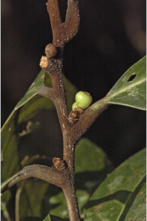
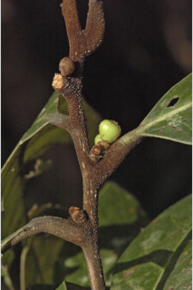

Images :


 

| Habit : | Trees up to 18 m tall. |
| Leaves : | Leaves simple , alternate , spiral ; petiole 1-2 cm long, brown tomentose ; lamina 7-23 x 4-11 cm, obovate-oblong , apex usually abruptly acuminate , base acute-cuneate , margin entire , subcoriaceous , brown tomentose on midrib and nerves beneath intercostals glabrous ; midrib canaliculate above; secondary_nerves 8-16 pairs, strong, nearly parallel till margin; tertiary_nerves distantly percurrent . |
| Inflorescence / Flower : | Flowers in sessile or subsessile umbellules , axillary or lateral on old branches . |
| Fruit and Seed : | Berry oblong , to 1.2 cm long, seated on sessile fruiting_perianth_cup ; seed 1. |